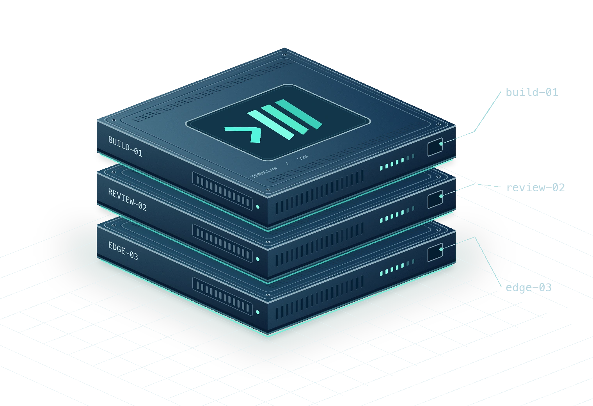

Set up the team
Install coding agents on the project machine and deploy skills and MCP servers. OpenCode and GitHub Copilot also offer structured ACP chats with tool calls, diffs, and permission requests.
Open-source agent workspace
Run coding agents side by side across SSH, WSL, and local machines. Pick up their sessions in a browser or direct them from your phone.
Windows / macOS / MIT license

Inside TermClaw
Follow a checkout service across three development hosts. Select a tool to see what you can do on the project machine.
SSH sessions
Tile a developer, a reviewer, and the worker logs side by side. Each terminal can keep running in tmux when its SSH connection drops.
Remote Docker
Reach the remote Docker Engine over the project’s SSH connection. Sort containers by CPU, stream logs, open a shell, or restart one worker while the other containers keep running.
Remote file browser
Browse remote folders, download a report, and upload a runbook. Preview code, JSON, images, and Markdown, or edit a text file and save it back to the host.
Git integration
Discover repositories, inspect diffs, choose files for a commit, and push from the project machine. Follow branches, history, and pull request checks from the same tab.
Linux host monitoring
Compare CPU and memory with disk and network activity. Inspect mount points and sort running processes to find what is consuming the host.
Product walkthrough
Agent coordination
Install coding agents on the project machine and deploy skills and MCP servers. OpenCode and GitHub Copilot also offer structured ACP chats with tool calls, diffs, and permission requests.
Connect Claude or another compatible client to TermClaw’s MCP server. With a reachable endpoint and permission, it can find a shared session, send a prompt, and read the result.
Let an OpenCode orchestrator watch the developer and reviewer. A finished session can trigger the next prompt. Set a round limit, or schedule a run for later.
Open source · MIT license
Download TermClaw for Windows x64 or macOS on Apple silicon.